Web Application Development
- (Large) Applications cannot be developed in ad-hoc manner
- We need design & architecture (software engineering)
- Concept separation, Component, Relations, etc.
- There are so many architectural patterns
- Common architectures in web applications
- MVC, MVVM, ...
- Multi-layer (Multi-tier), Microservices, etc.
MVC: Model-View-Controller
- Model
- Does all the computational work
- It contains data and performs computation on it
- View (the user interface)
- Show the results from model or controller
- Controller (of states sequences)
- Handles events/requests affecting model or view
- User inputs/requests go to the controller
-
Available commands are determined by controller (based on model)
- Tells the model what to do
- Examples: MS Excel
MVC Interactions?!
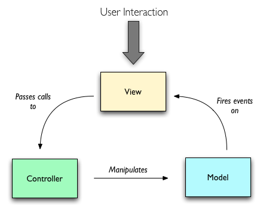
MVVM Design Pattern
- What is the role of the controller in MVC?
- Basically updates V by changes in M and vice versa
- Instead of coding the C, make it automated
- Automatically update M by changes in V
- Automatically update V by changes in M
- Two-way binding
- The Model-View-ViewModel pattern
- The view model is a value converter
-
Responsible for exposing (converting) the data objects from the model
in such a way that objects are easily managed and presented.
The Patterns in Web Applications
- Example: MVC for whole (client + server)
- Model
- Database tables (persistent data)
- Session information (current state data)
- Server-side processing
- View
- Controller
- Client-side scripting
- Part of processing by server side scripting
Design Pattern in Modern Apps
-
Apply the design pattern in client side and server side
separately
- Client side frameworks
- AngularJS 1.x: MVC (end of life since January 2022)
- Angular 2+: component based, close to MVVM
-
React: MVVM (It's more like MVVM and the mostly feature equivalent Vue
officially declares itself as MVVM.)
- Vue: MVVM
- Server side frameworks
- Go:
net/http — handlers, no prescribed pattern
-
Django, Rails, Laravel: MVC (Django calls the controller a "view")
- Spring: MVC
Layering Approach
- Common layering in web applications
- Presentation Layer
- Business logic Layer
- Data (management/resource) Layer
- These layers are purely abstractions
-
Not correspond to physical distribution
- All layers may or may not be on the same machine
-
Physical layering is referred as
multi-tier architecture
Layers vs. Tiers
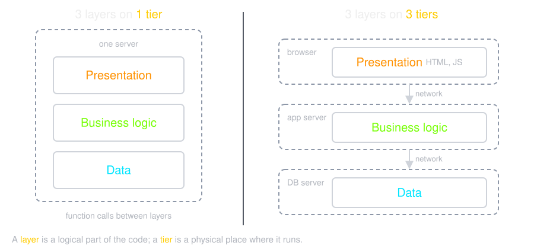
Multilayer Architecture
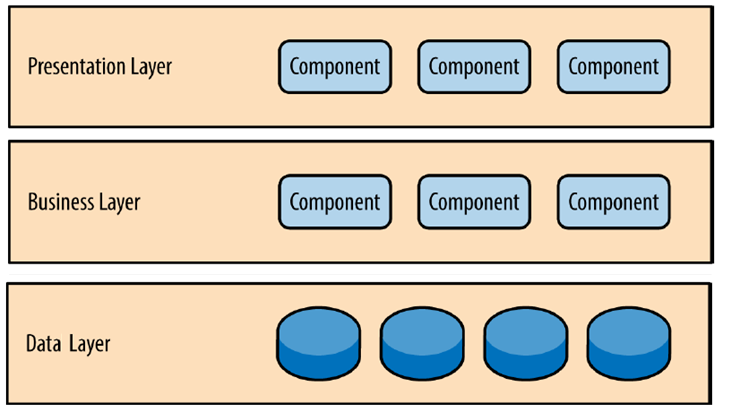
Presentation Layer
- User interface of the application
- Native (Windows Application, Android Application, etc.)
- Web-Based
-
Displays information (processing output) which are get from the business
logic layer
-
Gets user’s requests and pass them (with required data) to the business
logic layer
-
Note that the user interface of web applications can be made up
client side &
server side codes
- What is this layer in Gmail?
Business Logic Layer
- The work that the application needs to do
- Receives requests from presentation layer
- Fetches required data from data layer
- Process the request & data
- Output is sent back to the presentation layer
- What does this layer do in Gmail?
Data Layer
- Provides data access interface to business logic
- Hide data storage details
- Hide heterogeneity of underlining systems
- Communicating with data store systems
- Database server
- Messaging system
- ...
- What is this layer in Gmail?
Traditional Multi-layer Web App
Server-side rendering: the server builds the HTML. Example:
TMail (PHP).
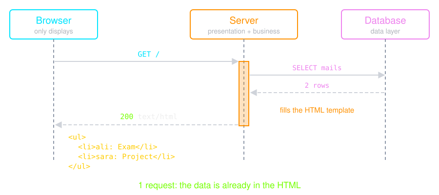
Modern Multi-layer Web App
Client-side rendering: the browser builds the HTML. Example:
say-hello
(React).
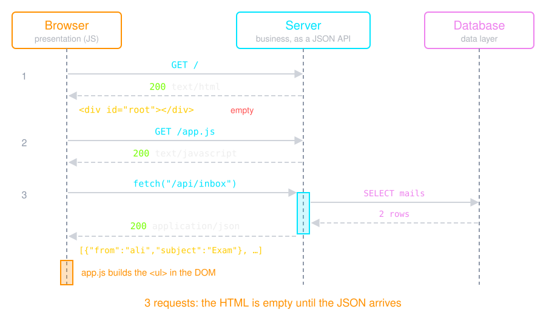
Service-oriented architecture (SOA)
-
The SOA-based approach helped IT professionals build applications
(services) with well-defined interfaces that abstract the internal
implementation details so that the consumers of these applications would
only need to integrate through the interface.
-
The SOA-based approach allowed application developers to change their
internal implementations more freely, as long as they adhered to the
interface definitions.
Enterprise service bus (ESB)
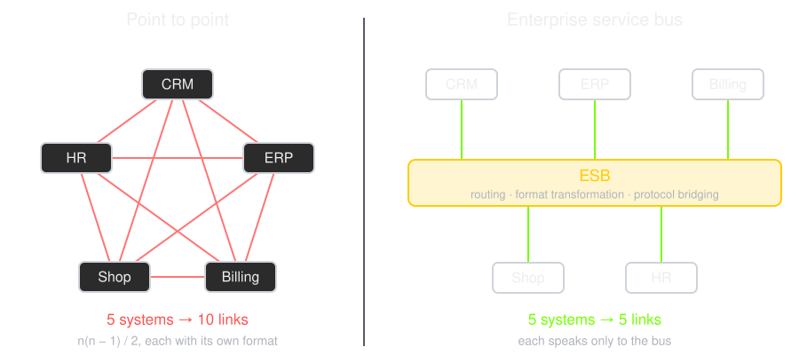
The bus let enterprises add more and more systems without the number of
integrations exploding.
Monolithic Architecture Issues
- Scalability
- Business logic is monolithic
- How to scale it?
- Fault tolerance
- If a part of business logic is failed?
- Upgrade
- How to upgrade a module of business logic?
Micro-Service Idea
-
Complex process can be divided into multiple
loosely-coupled components
- Each component
- Is autonomous
- Provides well-defined services
- Via Remote API call
- Distributed application
- Easy to scale
- Different technologies can be used
Scaling: Monolith vs. Microservices
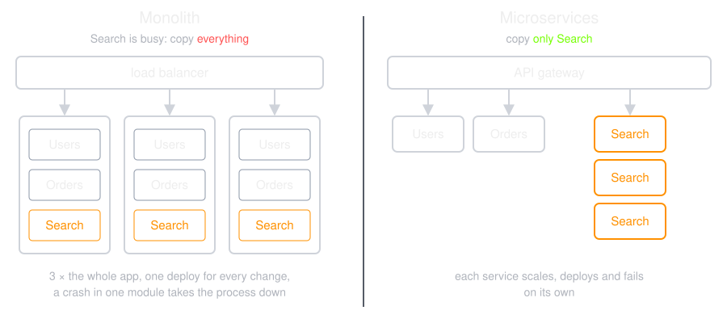
Microservices Architecture
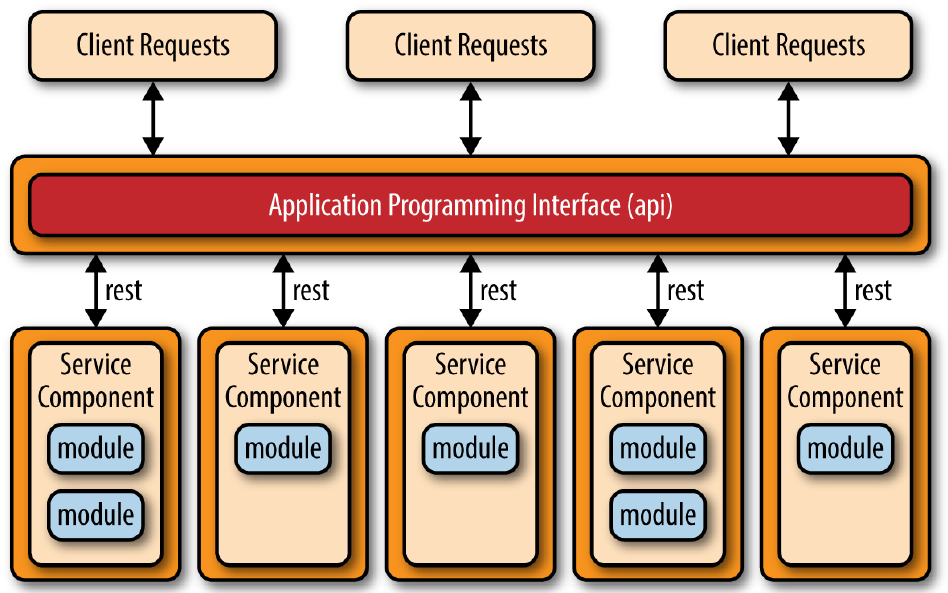
The Four Tiers of a Microservice Application
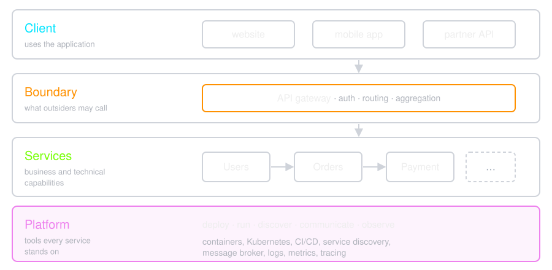
What Makes Microservices Challenging?
-
Scoping and identifying microservices requires
substantial domain knowledge.
-
The right boundaries and contracts between
services are difficult to identify and, once you've established them, can
be time-consuming to change.
-
Microservices are distributed systems and
therefore require different assumptions to be made about state,
consistency, and network reliability.
-
By distributing system components across networks, and increasing
technical heterogeneity, microservices introduce
new modes of failure.
-
It's more challenging to understand and verify what should happen in
normal operation.
Transactions?
- Where did you hear about them?
-
ACID Properties
- Atomicity
- Consistency
- Isolation
- Durability
Atomicity
- Transactions are often composed of multiple statements
-
Atomicity guarantees that each transaction is treated as a single
"unit", which either succeeds completely, or fails completely
-
if any of the statements constituting a transaction fails to complete,
the entire transaction fails and the system is left unchanged.
Consistency
-
Consistency ensures that a transaction can only bring the system from
one valid state to another
Isolation
- Transactions are often executed concurrently
-
Isolation ensures that concurrent execution of transactions leaves the
system in the same state that would have been obtained if the
transactions were executed sequentially.
Durability
-
Durability guarantees that once a transaction has been committed, it
will remain committed even in the case of a system failure (e.g., power
outage or crash).
A Real Story 🔥
- There was a micro-service architectured IoT Platform - 2018
-
Users can create project and each project must be created on 3 different
services:
-
Requests are handled by API gateway and then it calls X and Y services
to create a new project on these services too. (can you tell why this
approach is not right?)
-
Sometimes service X fail to create project and sometimes Y service isn't
available to handle/response the request.
-
We don't know service Y
is slow, or it is not working
- In each of these cases system goes into unrecoverable state
What Went Wrong
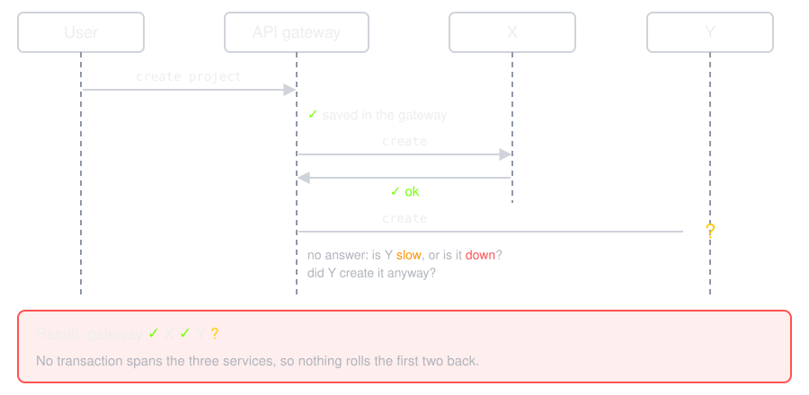
CAP Theorem
Impossible for a distributed data store to simultaneously provide more
than two out of the following three guarantees:
-
Consistency: Every read receives the most
recent write or an error
-
Availability: Every request receives a
(non-error) response, without the guarantee that it contains the most
recent write
-
Partition tolerance: The system continues to
operate despite an arbitrary number of messages being dropped (or
delayed) by the network between nodes
CAP During a Partition
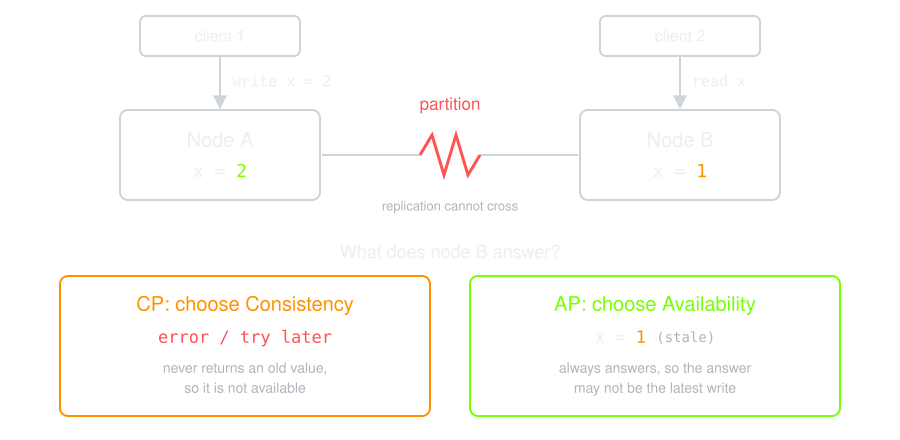
Mongo DB (CP)
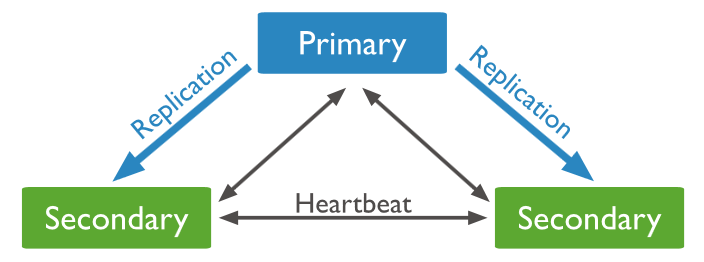
-
MongoDB is a NoSQL database that stores data in one or more Primary
nodes in the form of JSON files.
-
The replica set nodes in the system send a heartbeat (ping) to every
other node to keep track if other replicas or primary nodes are alive or
dead.
-
If a Primary node becomes inaccessible, then one of the secondary nodes
needs to become the primary node.
-
Till a new primary is elected from
amongst the secondary nodes, the system remains
unavailable to the user to make any new write
query.
-
Therefore, the MongoDB system behaves as a
Consistent system and
compromises on Availability during a
partition.
Cassandra (AP)
-
Cassandra is a peer-to-peer system. It consists of multiple nodes in the
system. And each node can accept a read or write request from the user.
- Cassandra maintains multiple replicas of data in separate nodes
-
A situation can occur where a partition occurs and the replica
does not
get an updated copy of the data.
-
In such a situation the replica nodes will still be available to the
user but the data will be inconsistent.
-
All updates will reach all the replicas
eventually. But in the meantime, it
allows divergent versions of the same data to
exist temporarily. Until we update
them to the consistent state.
Messaging patterns used in distributed systems
-
Remote procedure calls (RPC) versus shared resources
-
Synchronous versus asynchronous (client-server versus pub-sub)
-
Orchestration versus choreography
Remote procedure calls (RPC) versus shared resources
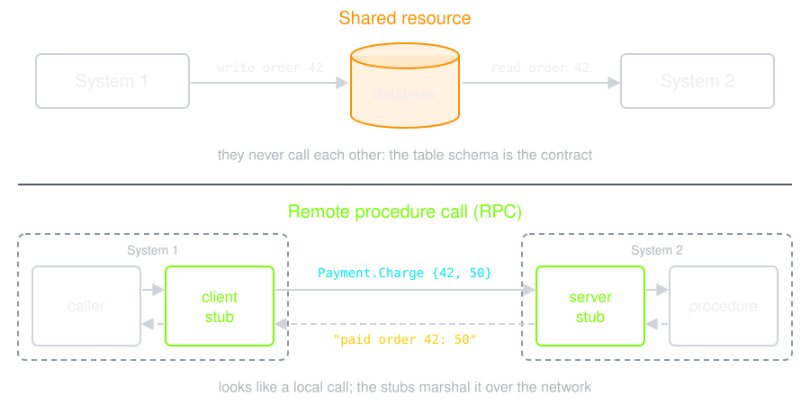
Synchronous versus asynchronous
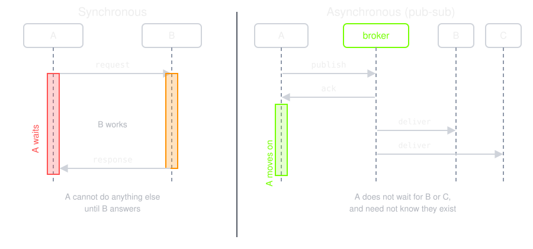
Client-server is synchronous; publish-subscribe through a
message broker is asynchronous.
Orchestration versus choreography
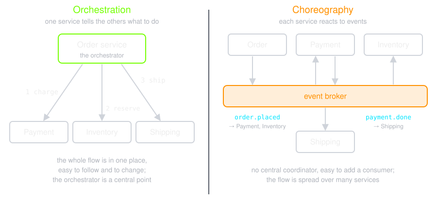
Choreography is borrowed from dance:
the steps are designed in advance, and nobody conducts during the show.
Asynchronous Messages
- More flexible
-
By announcing events, you make it
easy to extend the system to handle new requirements, because services
no longer need to have knowledge of their downstream consumers.
-
Asynchronous messaging typically requires a
communication broker
-
An independent system component that receives events and distributes
them to event consumers.
Routing by subject
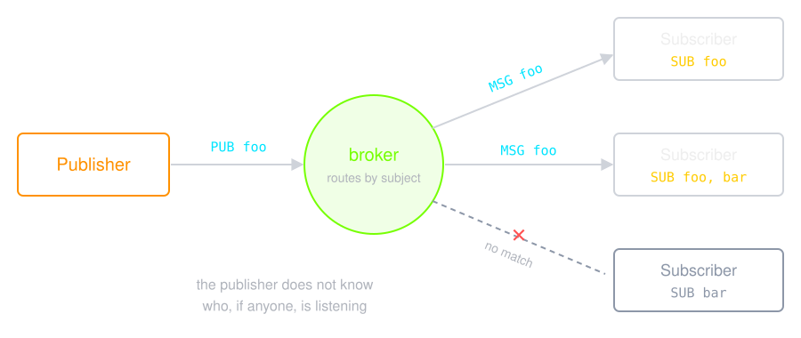
Solutions
- EMQ (MQTT) in erlang
- VerneMQ (MQTT) in erlang
- RabbitMQ (AMQP) in erlang
- NATS (NATS) in golang
- etc.
Quality of Service
- Fire and Forget
- at-least-once Delivery
- exactly-once Delivery
- etc.
Performance Criteria
- Number of Concurrent Connections
- Messages per Second
- Connections per Second
North-South vs. East-West
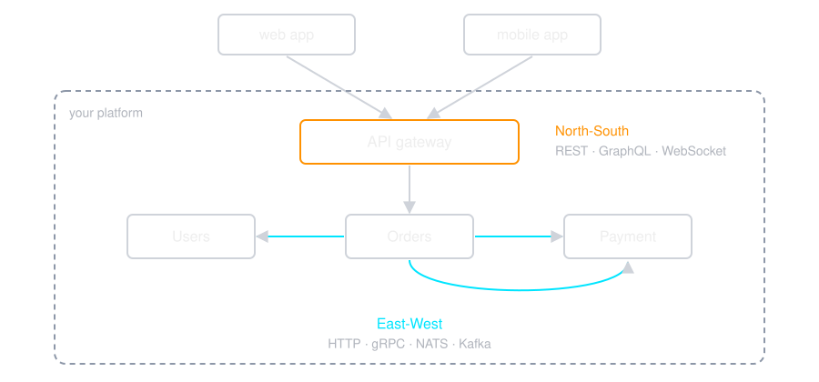
North-South traffic
In a typical enterprise platform, North-South traffic is the more
sensitive and customer-facing communication flow that attracts the maximum
attention from everyone.
East-West traffic
Most of the time, architects and technical leads give priority to the
consumer-facing interfaces and they let developers decide on the internal
communication between services.
- HTTP (REST)
- NATS
- Kafka
- gRPC